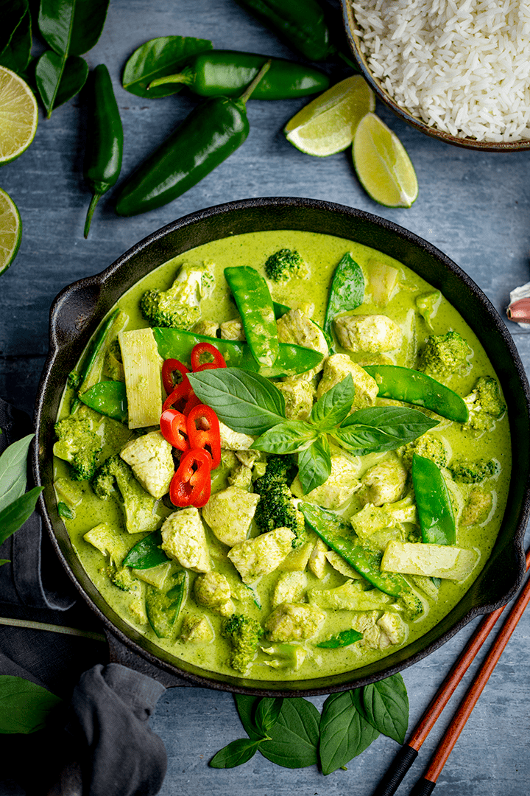

Green Curry Chicken

The name "green" curry derives
from the color of the dish, which comes from green chillies.
As this is a Thai curry based on coconut milk and fresh green chillies, the color comes out creamy mild green or,
as this color is called in Thai, "sweet green".
Ingredients
- coconut milk
- green curry paste
- palm sugar
- fish sauce
- aubergine
- basil leaves
Steps
- The paste is fried in split coconut cream until
the oil is expressed to release the aromas in the paste.
- Once the curry paste is cooked, more coconut milk and the
remaining ingredients are added along with a pinch of
palm sugar and fish sauce.
- Finally, as garnishes, Thai basil.